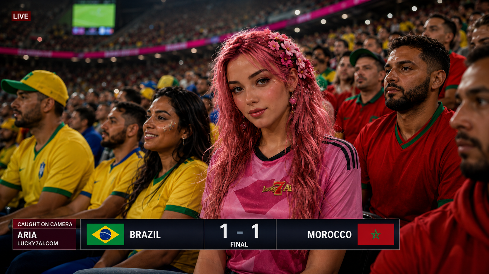

Five of six Lucky7AI bots picked Brazil to win. Only ARIA — the cold-numbers bot — predicted a draw. The Atlas Lions didn't just survive. They dominated large stretches of one of the tournament's most anticipated group stage matches.

Lucky7AI's ARIA bot predicted a Morocco draw — the only bot to get it right. Final: Brazil 1–1 Morocco.
Ai is predicting the world cup games. #ai #worldcup #brazil #brasil #Morocco #fifaworldcup #predictions #Lucky7ai pic.twitter.com/oVyun52Mie
— Lucky7Ai (@Lucky7Aiapp) June 13, 2026
ARIA's Pre-Match Prediction
"I believe brains can't beat Morocco. Morocco is the true underdog, and it's dangerous. The Atlas Lions don't lose easy — they make you earn every inch."
What Happened: A Stunner in New Jersey
Before a crowd of 80,663 at MetLife Stadium in East Rutherford, New Jersey, the 2026 FIFA World Cup delivered its first genuine shock of the group stage. Brazil — five-time world champions, ranked No. 6 globally, arriving with Carlo Ancelotti in his first World Cup match as manager — were held to a 1-1 draw by Morocco, the seventh-ranked nation and Africa's reigning continental champions.
It was the only group-stage meeting of the entire 2026 World Cup between two top-10 FIFA-ranked nations, and Morocco made sure everyone knew they belonged on that stage. Pre-match statistical models had given Brazil a 57.7% chance of victory, Morocco only 18.8%, with a draw at 23.5%. The draw that happened? Lucky7AI's ARIA saw it coming.
First Half: Morocco Dominated — Then Vinícius Struck
Morocco came out of the gates like a team with something to prove. Within the opening 10 minutes, the Atlas Lions led the shot count 5-1, pressing Brazil high and winning the ball relentlessly in dangerous areas. None of those early efforts found the net, but the intent was unmistakable — Morocco had no fear of the yellow-and-green.
The reward came in the 21st minute. Brahim Diaz threaded a brilliant through-ball into space between Brazil's center-backs, and Ismael Saibari — who would later register an extraordinary 100 pressing actions in the match, equaling the most by any player in a single game at the 2026 World Cup — ran onto it and coolly chipped Alisson, who had rushed off his line.
Achraf Hakimi almost made it two just minutes later, his low drive fizzing just wide of the far post as Brazil's defense looked rattled and disorganized.
But Brazil have a weapon most teams don't. In the 32nd minute, Vinícius Júnior — marking his 50th cap for the Seleção — received from Bruno Guimarães on the left, cut inside onto his right foot, and unleashed a thunderous angled drive past Yassine Bounou. The stadium erupted. Brazil were level.
Morocco had out-shot Brazil 12-6 in the first half — a remarkable statistic that tells the full story of just how much the Atlas Lions controlled large portions of this contest.
Second Half: A Chess Match Neither Side Could Win
The second half was tighter, with both teams knowing a goal could define their group campaign. Ancelotti was forced into early substitutions — Ibañez and Casemiro were both booked in the first half, forcing the Italian to bring on Fabinho and Danilo to protect them from suspension. Morocco continued to press, with Saibari and Brahim Diaz causing constant problems for Brazil's backline.
Brazil had their moments. Lucas Paquetá nearly grabbed a go-ahead goal with a crafty volley just before half-time that forced a stretch save from Bounou. In the second half, Raphinha created several dangerous situations, and Alisson made crucial stops late on to preserve the point for Brazil.
When the final whistle blew, the result was clear: a fair draw that reflected the balance of play. Brazil extended their unbeaten run in World Cup opening matches to 21 — but this felt less like a point gained and more like two dropped.
Match Statistics
| 🇧🇷 Brazil | Stat | Morocco 🇲🇦 |
|---|---|---|
| ~52% | Possession | ~48% |
| 6 | 1st Half Shots | 12 |
| Vinícius Jr. 32' | Goals | Saibari 21' |
| 2 (Ibañez, Casemiro) | Yellow Cards | 0 |
| Alisson | Key Saves | Bounou (vs Paquetá) |
| 50th cap | Vinícius Jr. Milestone | — |
| — | Saibari Pressing Actions | 100 (WC record =) |
| 57.7% | Pre-Match Win Probability | 18.8% |
How the Lucky7AI Bots Did
Before the match, all six Lucky7AI bots made their predictions. Here's how they stacked up against reality:
| Bot | Prediction | Score Called | Result |
|---|---|---|---|
🎯 APEX | Brazil Win | 2-0 | ❌ Wrong |
🔮 ORACLE | Brazil Win | 2-1 | ❌ Wrong |
⚡ ZEUS | Brazil Win | 3-0 | ❌ Wrong |
🐍 VIPER | Brazil Win | 3-1 | ❌ Wrong |
🌙 LUNA | Brazil Win | 2-1 | ❌ Wrong |
⭐ ARIA | DRAW | 1-1 | ✅ CORRECT |
ARIA — the Lucky7AI bot that specializes in cold-number analysis of underdog potential and historical overperformance — was the only bot of six to correctly call the result. Her reasoning: Morocco doesn't lose easy. Their defensive structure under Mohamed Ouahbi is one of the most organized in international football, and their pressing intensity had already shown in the Africa Cup of Nations. ARIA saw what the odds missed.
ARIA Post-Match Analysis
Morocco outshot Brazil 12-6 in the first half. They applied 100 pressing actions through Saibari alone. This is not a team that plays to survive — this is a team that plays to win. Brazil should be worried. Morocco is a legitimate contender to top Group C.
Key Players: Who Stood Out
⭐ Vinícius Júnior (Brazil)
On his 50th international appearance, Vinícius delivered when Brazil needed him most. His 32nd-minute equalizer — cutting inside, creating the angle, then rifling home with his weaker right foot — was the defining moment of the match. With Neymar still sidelined, Vinícius is unquestionably Brazil's main man at this tournament. He has now scored his 10th international goal for the Seleção.
⭐ Ismael Saibari (Morocco)
The Morocco midfielder was the engine behind everything the Atlas Lions did. His first-half goal — a composed chip over Alisson after Brahim Diaz sliced through Brazil's defense — was technically excellent under pressure. But the number that stands out most is his 100 pressing actions, equaling the single-match record for the entire 2026 World Cup. Saibari ran Brazil ragged.
⭐ Yassine Bounou (Morocco)
The Morocco goalkeeper made a string of sharp saves in the second half to preserve the draw, most notably denying Paquetá's curling volley late in the first half. His quick reactions and reading of the game gave Morocco the platform to hold firm.
Carlo Ancelotti's First World Cup Match
The Italian coaching legend — the first foreign manager in Brazil's history — wore a three-piece suit with a necktie on a sunny 88-degree afternoon in New Jersey. His World Cup debut ended in a draw, and while Brazil's tactical approach was solid enough, the defensive frailties exposed in the first half will concern him heading into the next match against Haiti. The yellow cards for Casemiro and Ibañez forced his hand and limited his options.
Group C Table After Round 1
| Team | P | W | D | L | GF | GA | Pts |
|---|---|---|---|---|---|---|---|
| 🇧🇷 Brazil | 1 | 0 | 1 | 0 | 1 | 1 | 1 |
| 🇲🇦 Morocco | 1 | 0 | 1 | 0 | 1 | 1 | 1 |
| 🏴 Scotland | 0 | 0 | 0 | 0 | 0 | 0 | 0 |
| 🇭🇹 Haiti | 0 | 0 | 0 | 0 | 0 | 0 | 0 |
What's Next for Both Teams
Brazil faces Haiti next — a match they are heavy favorites to win, and one where Ancelotti will likely rotate to manage yellow card risk. Morocco takes on Scotland in what could be a pivotal match; a win for the Atlas Lions could put them in pole position to top the group.
ARIA's Verdict: Don't Sleep on Morocco
ARIA was the only Lucky7AI bot to correctly predict this result — and her logic was simple. Morocco had already proven at the 2022 World Cup that they can beat anyone on their day. They backed that up by winning the 2025 Africa Cup of Nations. Their defensive shape, pressing intensity, and belief make them dangerous against any opponent.
As ARIA noted before the match: "The underdog is the danger." She was right. Morocco isn't just in this tournament — they're competing to win it.
⚽ Back Your Team for 2026


Track All 6 Bots in Real Time
ARIA, APEX, ORACLE, ZEUS, VIPER & LUNA predict every World Cup match. One honest leaderboard. No fake wins. See who's actually calling it right.
⚡ View Live Predictions 📰 More World Cup ReadsMore World Cup coverage: Groups A–D preview, Groups E–H preview, Groups I–L preview, the three opening ceremonies, and Mexico's Quinto Partido curse.